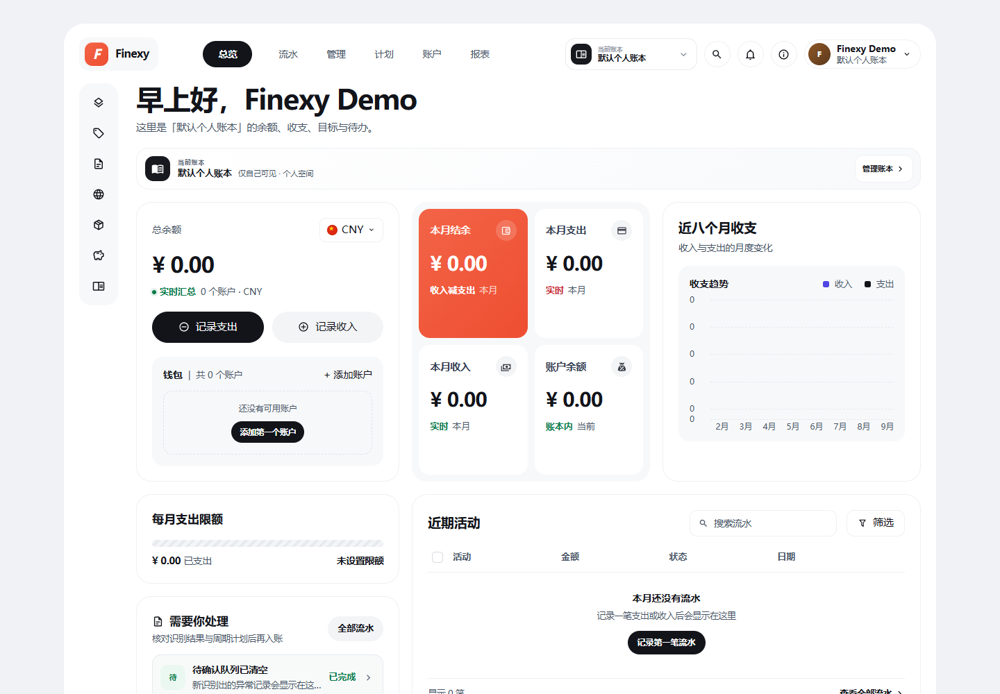
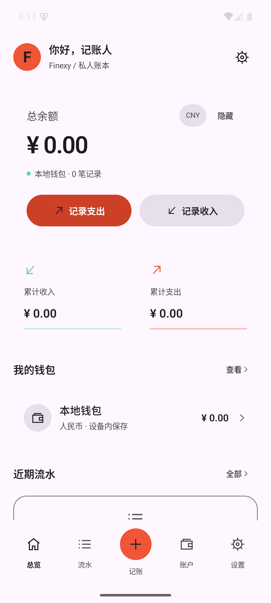
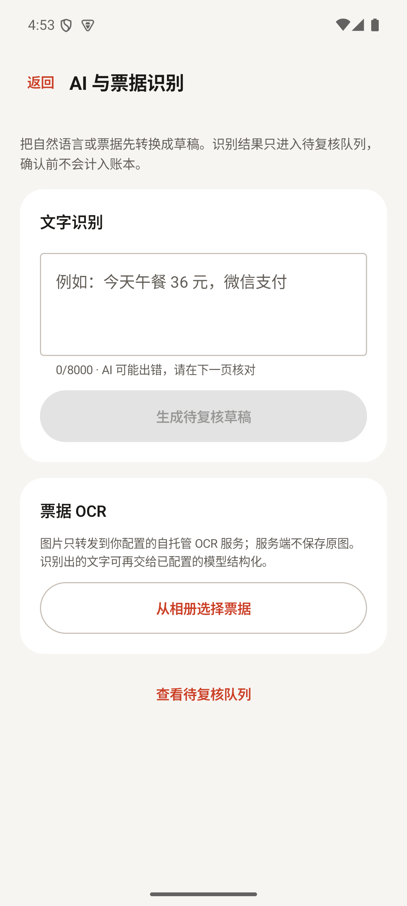
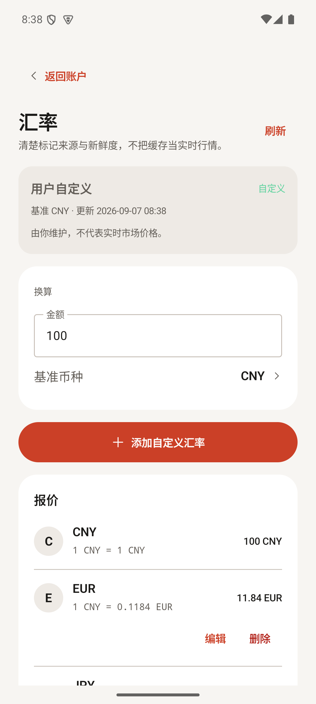

多账本快速切换
个人生活、家庭开支和独立目标分别记录；切换账本后，余额、流水、账户和目标一起切换。
开源 MIT · 自托管 · AI 驱动
为个人生活、家庭共同开支或独立目标创建不同账本，随时切换，也可以邀请成员共同记录。 Android、Web 与 Windows 使用同一套账本和同步体系；数据部署在你自己的 NAS 或服务器上。

核心能力
个人可以创建多个账本，也可以从同一账本邀请成员、记录流水并管理目标。
个人生活、家庭开支和独立目标分别记录；切换账本后，余额、流水、账户和目标一起切换。
用一次性邀请码加入账本，加入前核对邀请人和权限；所有者、管理员、成员和只读角色各司其职。
支出、收入、跨币种转账与期初余额全结构化，账户、分类、标签、备注一一对应。
月度预算进度实时可见，超支提前预警；资产清单记录购入与卖出，估值一目了然。
内置市场汇率参考与自定义汇率，来源与新鲜度清楚标记；跨币种转账自动给出换算建议。
房租、订阅等周期账单到期先进入待确认队列，确认后才生成流水，避免重复入账。
收支趋势、分类与标签统计、月度对比与 CSV 导出，桌面级高密度信息布局。
NAS 或服务器本地部署，SQLite 存储、完整备份恢复，并提供 MCP 接口连接 AI 客户端。
Web 工作台
高密度信息布局，重要数据一屏尽览；浏览器直接使用，也可安装为 PWA。
总余额、多币种切换与收支快捷入口，打开就知道财务状态。
逐月收入与支出对比、分类与标签统计，CSV 导出随心分析。
月度支出限额实时进度，财务待办集中提醒，超支前先知道。
Android 客户端
原生 Kotlin 构建：离线随手记，回到网络自动同步；应用锁、待确认入账与 AI 记账随身携带。



多端联动
手机、浏览器、桌面客户端围绕同一份自托管账本协作，数据始终一致。
地铁里、超市中，Android 离线记账毫秒级完成。
回到网络自动上传增量，断网重试、冲突完整保留。
Web / PWA / Windows 的余额、预算与报表即时一致。
周期账单到期进入待确认队列，任何一端确认，处处生效。
AI 联动
Finexy 内置 MCP 接口，OpenClaw（龙虾）、Hermes Agent、Codex 等支持 MCP 的 AI 助手都能接入你的账本。配合 OpenClaw 的微信接入，聊天时顺手报一笔—— AI 解析金额、分类与账户，生成待复核草稿，确认后才入账，AI 不替你做决定。
AI 助手同样跑在你自己的机器上，模型 API Key 由你自己配置，聊天记录与账本都不经过第三方。
今天午餐 36 元，微信支付
已生成待复核草稿：
支出 ¥36.00 · 餐饮 · 微信支付
确认后才会入账。
确认
✓ 已入账。本月预算还剩 ¥2,140，放心花。
* 示意对话：实际回复内容取决于所接入的 AI 助手。
本地部署
群晖、威联通等 AMD64 NAS 与家用服务器都能跑。账本数据只落在你自己的磁盘上，不出内网。
docker pull ph97/finexy-bookkeeping:1.9.2-amd64
公开镜像，无需登录。搜索时请使用完整名称 ph97/finexy-bookkeeping。
docker compose up -d
NAS 套件中心没有 Docker？可直接使用 NAS 部署配置包或离线镜像。
http://NAS的IP:8080/
浏览器直接使用，可安装为 PWA；也可选配 DeepSeek API Key 启用 AI 能力。
使用飞牛 NAS（fnOS）？查看 fnOS 安装部署步骤 →
飞牛 NAS · fnOS
使用 fnOS 自带的 Docker / 容器管理，从公开仓库拉取 AMD64 镜像，把数据目录挂载到 NAS 存储空间。下列命令与仓库的 deploy/nas-amd64 配置包一致。
在 fnOS「应用中心」安装 Docker，或直接使用系统自带的容器管理 / Compose 项目功能。SSH 入口通常在「系统设置 → SSH」，具体名称以你的 fnOS 版本为准。
uname -m，输出必须是 x86_64；当前镜像不支持 ARM64。8080 未被其他套件占用。mkdir -p /vol1/1000/docker/finexy/{data,log,storage}
cd /vol1/1000/docker/finexy && chown -R 1000:1000 data log storage
/vol1/1000/docker/finexy 是 fnOS 存储空间的示例路径，需按实际情况填写你 NAS 的挂载路径，不要放在系统盘。容器内以 UID/GID 1000 运行，因此三个目录都要可写。
公开仓库，无需登录：
docker pull ph97/finexy-bookkeeping:1.9.2-amd64
docker pull ph97/finexy-bookkeeping:ocr-1.0-amd64
NAS 无法访问 Docker Hub 时，改用离线导入：
# 在有 Docker 的电脑上导出
docker save -o finexy-1.9.2-amd64.tar ph97/finexy-bookkeeping:1.9.2-amd64
docker save -o finexy-ocr-1.0-amd64.tar ph97/finexy-bookkeeping:ocr-1.0-amd64
# 上传到 NAS 后导入，tag 会保留
docker load -i finexy-1.9.2-amd64.tar
docker load -i finexy-ocr-1.0-amd64.tarcp .env.example .env && chmod 600 .env
APP_PORT=8080
APP_DOMAIN=192.168.1.10
APP_SECRET_KEY=替换为随机生成的长密钥
ENABLE_AI_TEXT_RECOGNITION=false
DEEPSEEK_API_KEY=
DEEPSEEK_MODEL=deepseek-v4-flashAPP_DOMAIN 填 NAS 的局域网 IP；APP_SECRET_KEY 用 openssl rand -hex 32 生成后长期保存。需要 AI 记账时把 ENABLE_AI_TEXT_RECOGNITION 改为 true，并填写 DEEPSEEK_API_KEY。
docker compose pull && docker compose up -d
docker compose ps && curl http://127.0.0.1:8080/healthz.json
两个服务最终都应为 healthy，健康检查返回 {"success":true}。首次启动 OCR 会下载中文模型，可能持续数分钟，用 docker compose logs -f ocr bookkeeping 观察进度。
浏览器打开 http://NAS的IP:8080/，首次进入注册页；注册的本地用户即管理员（单用户模型）。
data/，附件写入 storage/。把以下内容保存为部署目录下的 compose.yaml，与 .env 放在同一目录。OCR 不映射端口，只在 Compose 内网提供服务。
services:
bookkeeping:
image: ph97/finexy-bookkeeping:1.9.2-amd64
platform: linux/amd64
restart: unless-stopped
ports:
- "${APP_PORT:-8080}:8080"
environment:
TZ: Asia/Shanghai
EBK_SERVER_DOMAIN: "${APP_DOMAIN:-localhost}"
EBK_SERVER_ROOT_URL: "http://${APP_DOMAIN:-localhost}:${APP_PORT:-8080}/"
EBK_SECURITY_SECRET_KEY: "${APP_SECRET_KEY:?set APP_SECRET_KEY in .env}"
EBK_LLM_TRANSACTION_FROM_AI_TEXT_RECOGNITION: "${ENABLE_AI_TEXT_RECOGNITION:-false}"
EBK_LLM_TEXT_RECOGNITION_LLM_PROVIDER: openai_compatible
EBK_LLM_TEXT_RECOGNITION_OPENAI_COMPATIBLE_BASE_URL: https://api.deepseek.com
EBK_LLM_TEXT_RECOGNITION_OPENAI_COMPATIBLE_API_KEY: "${DEEPSEEK_API_KEY:-}"
EBK_LLM_TEXT_RECOGNITION_OPENAI_COMPATIBLE_MODEL_ID: "${DEEPSEEK_MODEL:-deepseek-v4-flash}"
EBK_LLM_TEXT_RECOGNITION_REQUEST_TIMEOUT: "120000"
EBK_OCR_SERVER_URL: http://ocr:8000
EBK_OCR_REQUEST_TIMEOUT: "120000"
EBK_MCP_ENABLE_MCP: "true"
volumes:
- ./data:/ezbookkeeping/data
- ./log:/ezbookkeeping/log
- ./storage:/ezbookkeeping/storage
depends_on:
ocr:
condition: service_healthy
mem_limit: 1536m
healthcheck:
test: ["CMD", "wget", "-q", "-O", "-", "http://127.0.0.1:8080/healthz.json"]
interval: 30s
timeout: 5s
retries: 5
ocr:
image: ph97/finexy-bookkeeping:ocr-1.0-amd64
platform: linux/amd64
restart: unless-stopped
environment:
TZ: Asia/Shanghai
volumes:
- ocr-models:/root/.paddlex
mem_limit: 5g
healthcheck:
test: ["CMD", "python", "-c", "import urllib.request; urllib.request.urlopen('http://127.0.0.1:8000/health', timeout=5)"]
interval: 30s
timeout: 10s
retries: 10
start_period: 180s
volumes:
ocr-models:应用内完整备份：登录后进入「设置 → 数据管理 → 完整备份与恢复」，下载一个 ZIP，内含一致的 SQLite 快照与本地附件。恢复时校验清单、路径、展开大小与 SQLite 头，并重启容器。
storage/ 会保留为 .pre-restore-<时间戳>，可作为回退点。.env 不在 ZIP 内，请单独保存密钥与 API 配置。docker compose stop bookkeeping，复制 data/、storage/、.env（可选 log/），再 docker compose start bookkeeping。docker compose down -v，它会删除 Docker 管理的 ocr-models 卷。data/、storage/、.env，保持挂载路径与 APP_SECRET_KEY 不变。compose.yaml 中的镜像 tag 改为新版本，例如 1.9.3-amd64。docker compose pull bookkeeping、docker compose up -d --no-deps bookkeeping，再用 docker compose ps 确认健康。latest，固定版本 tag 更便于回退。http://127.0.0.1:8080。https://finance.example.com；证书通过 fnOS 证书管理申请或导入，域名与证书需按实际情况填写。EBK_SERVER_ROOT_URL 改为 "https://finance.example.com/"，然后执行 docker compose up -d 重建容器。8080 直接映射到公网；局域网仍可用 http://NAS的IP:8080/。确认三个目录在 NAS 存储空间而不是系统盘，并执行 chown -R 1000:1000 data log storage。仍失败时查看 docker compose logs --tail=200 bookkeeping。
用 ss -lntp | grep 8080（或 netstat -lntp）确认占用进程，然后修改 .env 的 APP_PORT 并重启。访问地址和反向代理目标也要同步改端口。
执行 docker compose config 检查 volumes，或用 docker inspect 容器名 --format '{{json .Mounts}}' 核对绑定目录。若曾未挂载启动，必须先迁出容器内 /ezbookkeeping/data 与 storage，再重建服务。
Compose 已固定 TZ: Asia/Shanghai。用 docker compose exec bookkeeping date 与 NAS、浏览器时间对比；修改时区不会自动修正已写入账目的日期，需要逐条核对。
先 docker logout 再重试；检查 NAS 的 DNS、系统时间与防火墙。仍不可达时改用上文的 docker save / docker load 离线导入。
首次启动需要下载中文 OCR 模型。查看 docker compose logs --tail=200 ocr 和 docker stats，确认内存与磁盘空间充足（OCR 预留 5 GB）。
本页命令与仓库中的 deploy/nas-amd64/compose.yaml、NAS 公开镜像部署指南保持一致；镜像版本号以仓库当前发布 tag 为准。fnOS 的 SSH、反向代理与证书入口名称可能随系统版本变化。
安全与隐私
不需要信任任何云服务商：账本、票据与 AI 密钥都留在你自己控制的范围内。
账本存在你的 NAS / 服务器，SQLite 单文件随取随迁；不依赖任何云账号，停服也不影响记账。
票据原图只发给你自己部署的 OCR 服务，不落第三方；模型 API Key 自行配置，识别结果先复核后入账。
应用 PIN 与生物识别锁、加密备份与恢复、多用户账本隔离——换设备、借手机都不担心。
MIT 协议全开源，每一行处理账本的代码都可复查；发布文件提供 SHA-256 校验。
下载
所有发布文件统一发布在 GitHub Releases，并提供 SHA-256 校验值。
原生 Kotlin 客户端，离线记账自动同步。当前为调试签名测试版。
部署配置包与记账镜像 tar，适配群晖、威联通等 AMD64 NAS；OCR 镜像需单独准备。
安装版与便携版，x64。客户端连接到已部署的 Finexy 服务。
部署完成后浏览器直接访问，无需安装；可添加到主屏幕作为 PWA 使用。
Windows 包未做代码签名，首次运行 SmartScreen 可能提示；Android APK 为调试签名测试版。请只从本仓库 Releases 下载，并核对 SHA256SUMS.txt。